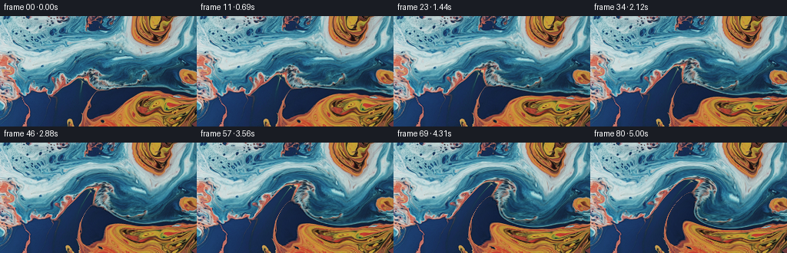
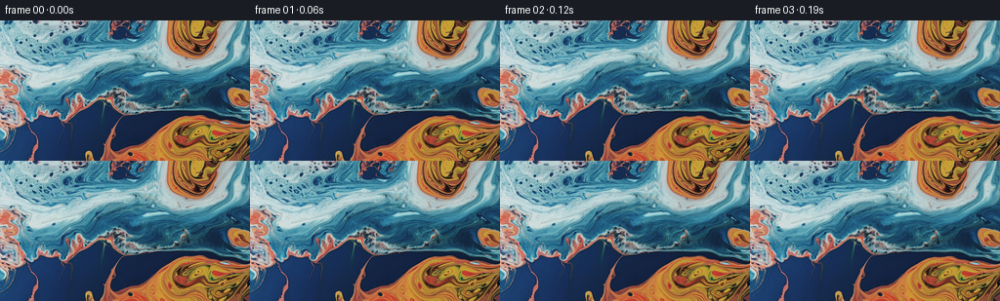

← 本轮 smoke 总览traex/GPT-5.6-Sol · 0000_s2
text · 256×144 · 16.0 FPS · 81 帧 · 状态 complete · 输出 tokens 8115
原始任务a close up of a blue and orange liquid
当前保存结果
已保存候选与代码修改
这里按时间展示外部捕获的候选，每份均可单独播放。保存新版本不等于完成视觉检查；下方工具证据记录实际看过的图。
候选 01 · 2026-11-08T22:50:41.659133+00:00 · 点开播放与检查图
inspection.png

transition_check.png

代码变化
--- 上一保存版本
+++ 本次保存版本
@@ -0,0 +1,110 @@
+"""Generate a smooth macro shot of the supplied blue/orange liquid.
+
+The still is treated as pigment on a gently moving, incompressible surface.
+An inverse texture map is transported through a deterministic, multi-scale
+stream field, so details move together instead of flickering independently.
+"""
+
+from pathlib import Path
+
+import cv2
+import numpy as np
+from PIL import Image
+
+import artifact_io
+
+
+ROOT = Path(__file__).resolve().parent
+W, H = 256, 144
+N, FPS = 81, 16.0
+DT = 1.0 / FPS
+
+
+def velocity_field(xx: np.ndarray, yy: np.ndarray, t: float,
+ boundary_window: np.ndarray) -> tuple[np.ndarray, np.ndarray]:
+ """Return a divergence-free velocity field in pixels per second.
+
+ Taking the perpendicular gradient of a stream function gives the broad
+ rolling motion characteristic of two viscous fluids. The squared-sine
+ boundary window keeps the image perimeter stable and avoids exposed or
+ mirrored borders.
+ """
+ # Two slowly wandering eddies pull the warm and cool areas around their
+ # shared boundary. Their wide radii avoid a synthetic whirlpool look.
+ c1x = 157.0 + 5.0 * np.sin(0.47 * t)
+ c1y = 91.0 + 3.5 * np.sin(0.37 * t + 0.8)
+ c2x = 78.0 + 4.0 * np.sin(0.33 * t + 1.7)
+ c2y = 72.0 + 3.0 * np.sin(0.42 * t + 0.2)
+ g1 = np.exp(-0.5 * (((xx - c1x) / 70.0) ** 2 + ((yy - c1y) / 49.0) ** 2))
+ g2 = np.exp(-0.5 * (((xx - c2x) / 55.0) ** 2 + ((yy - c2y) / 43.0) ** 2))
+
+ # Long waves and a finer oblique component keep motion organic at several
+ # scales. All phases change slowly over the five-second shot.
+ broad = np.sin(2.0 * np.pi * (xx / 205.0 + 0.037 * t))
+ broad *= np.sin(2.0 * np.pi * (yy / 132.0 - 0.029 * t + 0.13))
+ oblique = np.sin(2.0 * np.pi * (xx / 132.0 - yy / 205.0 + 0.052 * t + 0.21))
+ fine = np.sin(2.0 * np.pi * (xx / 86.0 + yy / 163.0 - 0.061 * t + 0.47))
+
+ psi = boundary_window * (455.0 * g1 - 245.0 * g2 + 78.0 * broad
+ + 38.0 * oblique + 15.0 * fine)
+ dpsi_dy, dpsi_dx = np.gradient(psi)
+ # v = perpendicular gradient(psi), hence div(v) = 0.
+ u = dpsi_dy.astype(np.float32)
+ v = (-dpsi_dx).astype(np.float32)
+ return u, v
+
+
+def generate() -> np.ndarray:
+ source = np.asarray(Image.open(ROOT / "first_frame.png").convert("RGB"), dtype=np.uint8)
+ if source.shape != (H, W, 3):
+ raise ValueError(f"unexpected first-frame shape: {source.shape}")
+
+ yy, xx = np.mgrid[0:H, 0:W].astype(np.float32)
+ # Squared sine has both value and slope zero at each edge.
+ boundary = (np.sin(np.pi * xx / (W - 1)) ** 2
+ * np.sin(np.pi * yy / (H - 1)) ** 2).astype(np.float32)
+
+ # map_x/map_y say which point in frame zero occupies every output pixel.
+ # They evolve, while every rendered frame samples the pristine original;
+ # this avoids cumulative resampling blur.
+ map_x = xx.copy()
+ map_y = yy.copy()
+ frames = np.empty((N, H, W, 3), dtype=np.uint8)
+ frames[0] = source # Explicitly preserve the contract's exact first frame.
+
+ source_f = source.astype(np.float32)
+ phase0 = (np.sin(2.0 * np.pi * (xx / 181.0 + yy / 257.0 + 0.08))
+ + 0.55 * np.sin(2.0 * np.pi * (xx / 109.0 - yy / 191.0 + 0.31)))
+
+ for index in range(1, N):
+ t_mid = (index - 0.5) * DT
+ u, v = velocity_field(xx, yy, t_mid, boundary)
+
+ # Midpoint backtrace for the transport equation. Since the velocity
+ # changes by much less than one pixel per frame, bilinear transport of
+ # this smooth coordinate map is stable and temporally coherent.
+ depart_x = xx - DT * u
+ depart_y = yy - DT * v
+ map_x = cv2.remap(map_x, depart_x, depart_y, cv2.INTER_LINEAR,
+ borderMode=cv2.BORDER_REFLECT_101)
+ map_y = cv2.remap(map_y, depart_x, depart_y, cv2.INTER_LINEAR,
+ borderMode=cv2.BORDER_REFLECT_101)
+
+ warped = cv2.remap(source_f, map_x, map_y, cv2.INTER_CUBIC,
+ borderMode=cv2.BORDER_REFLECT_101)
+
+ # A very restrained traveling illumination ripple suggests changing
+ # refraction on the liquid surface. It starts from zero, remains below
+ # a few code values, and is softly suppressed at the perimeter.
+ t = index * DT
+ phase = (np.sin(2.0 * np.pi * (xx / 181.0 + yy / 257.0 + 0.08) + 0.43 * t)
+ + 0.55 * np.sin(2.0 * np.pi * (xx / 109.0 - yy / 191.0 + 0.31) - 0.31 * t))
+ light = (1.65 * boundary * (phase - phase0))[..., None]
+ warped += light
+ frames[index] = np.clip(np.rint(warped), 0, 255).astype(np.uint8)
+
+ return frames
+
+
+if __name__ == "__main__":
+ artifact_io.save(generate(), ROOT)
可观测工具行为
命令 1 · 2026-11-08T22:49:18.043689+00:00/bin/bash -lc "cat GENERATION_RULES.md && printf '\\n--- PROMPT ---\\n' && cat prompt.txt"
exit 0 命令 2 · 2026-11-08T22:49:18.231033+00:00/bin/bash -lc "find . -maxdepth 2 -type f -printf '%p\\n' | sort && printf '\\n--- tooling ---\\n' && command -v ffmpeg && command -v python3"
exit 1 命令 3 · 2026-11-08T22:49:18.526318+00:00/bin/bash -lc "python3 - <<'PY'
from PIL import Image
im=Image.open('first_frame.png')
print(im.mode, im.size)
print(im.getextrema())
PY"exit 0 命令 4 · 2026-11-08T22:49:27.713634+00:00/bin/bash -lc "cat task_spec.json && sed -n '1,240p' artifact_io.py"
exit 0 命令 5 · 2026-11-08T22:49:28.236463+00:00/bin/bash -lc "python3 - <<'PY'
from PIL import Image
import numpy as np
from collections import Counter
im=np.array(Image.open('first_frame.png'))
print('shape',im.shape)
# summaries by thirds/quadrants
for y0,y1 in [(0,36),(36,72),(72,108),(108,144)]:
for x0,x1 in [(0,64),(64,128),(128,192),(192,256)]:
a=im[y0:y1,x0:x1].astype(float)
print((y0,x0), 'mean',np.round(a.mean((0,1)),1),'std',np.round(a.std((0,1)),1),end=' | ')
print()
# exact prominent colors
c=Counter(map(tuple,im.reshape(-1,3)))
print('unique',len(c), 'top', c.most_common(20))
# sample every 12 px converted into labels based RGB dominance/luma
chars=[]
for y in range(6,144,9):
row=''
for x in range(4,256,8):
r,g,b=im[y-3:y+4,x-3:x+4].mean((0,1))
mx=max(r,g,b); mn=min(r,g,b); lum=(r+g+b)/3
if lum<20: ch='.'
elif b>r*1.3 and b>g*1.15: ch='B'
elif r>b*1.35 and r>g*1.15: ch='O'
elif r>80 and g>40 and b<55: ch='o'
elif b>r*1.15: ch='b'
elif r>b*1.15: ch='r'
elif lum>150: ch='W'
else: ch='-'
row+=ch
chars.append(row)
print('\\n'.join(chars))
PY"exit 0 命令 6 · 2026-11-08T22:49:38.553449+00:00/bin/bash -lc "python3 - <<'PY'
mods=['numpy','PIL','scipy','cv2','imageio']
for m in mods:
try:
x=__import__(m); print(m,'OK',getattr(x,'__version__',''))
except Exception as e: print(m,'NO',e)
PY"
exit 0 命令 7 · 2026-11-08T22:49:39.073750+00:00/bin/bash -lc "python3 - <<'PY'
from PIL import Image
import numpy as np
from scipy.ndimage import sobel, gaussian_filter
im=np.asarray(Image.open('first_frame.png')).astype(float)/255
# chroma warm/cool and edge stats
warm=im[...,0]-.5*(im[...,1]+im[...,2]); cool=im[...,2]-im[...,0]
for name,a in [('warm',warm),('cool',cool),('lum',im.mean(2))]:
print(name,'range',a.min(),a.max(),'quantiles',np.quantile(a,[0,.1,.25,.5,.75,.9,1]))
# row col means warm/cool locations
for name,a in [('warm',warm),('cool',cool)]:
aa=gaussian_filter(a,8)
iy,ix=np.unravel_index(np.argmax(aa),aa.shape); jy,jx=np.unravel_index(np.argmin(aa),aa.shape)
print(name,'smooth max',ix,iy,aa[iy,ix],'min',jx,jy,aa[jy,jx])
print('row means',np.round(a.mean(1)[::12],2))
print('col means',np.round(a.mean(0)[::16],2))
PY"exit 0 命令 8 · 2026-11-08T22:50:33.830536+00:00/bin/bash -lc 'python3 generate.py'
exit 0 命令 9 · 2026-11-08T22:50:47.422732+00:00/bin/bash -lc "du -sh pixels.npz index.html frames inspection.png transition_check.png && python3 - <<'PY'
import numpy as np
z=np.load('pixels.npz')['pixels']
print('npz tensor',z.shape,z.dtype,'first packed sample',z[0,0,:5])
PY"exit 0 命令 10 · 2026-11-08T22:50:47.612896+00:00/bin/bash -lc "python3 - <<'PY'
import cv2, numpy as np
from PIL import Image
ims=[np.asarray(Image.open(f'frames/{i:02}.png')) for i in [0,16,32,48,64,80]]
def sharp(im):
g=cv2.cvtColor(im,cv2.COLOR_RGB2GRAY)
return cv2.Laplacian(g,cv2.CV_32F).var(), np.mean(np.hypot(cv2.Sobel(g,cv2.CV_32F,1,0),cv2.Sobel(g,cv2.CV_32F,0,1)))
for i,im in zip([0,16,32,48,64,80],ims):
print(i,'sharp',sharp(im),'mean/std',np.round(im.mean((0,1)),2),np.round(im.std((0,1)),2),'range',im.min(),im.max())
# flow from start to selected points, robust percentiles
base=cv2.cvtColor(ims[0],cv2.COLOR_RGB2GRAY)
for i,im in zip([16,32,48,64,80],ims[1:]):
g=cv2.cvtColor(im,cv2.COLOR_RGB2GRAY)
fl=cv2.calcOpticalFlowFarneback(base,g,None,.5,4,19,4,7,1.5,0)
mag=np.linalg.norm(fl,axis=2)
print('flow 0->',i,'median,p90,p99,max',np.round(np.percentile(mag,[50,90,99,100]),2),'mean vector',np.round(fl.mean((0,1)),2))
PY"exit 0 命令 11 · 2026-11-08T22:50:47.917443+00:00/bin/bash -lc "python3 - <<'PY'
import numpy as np
from PIL import Image
f=np.stack([np.asarray(Image.open(f'frames/{i:02}.png')) for i in range(81)])
s=np.asarray(Image.open('first_frame.png'))
print('frames',f.shape,f.dtype,'first exact',np.array_equal(f[0],s))
# Differences through time
for i in [1,2,4,8,16,32,48,64,80]:
d=np.abs(f[i].astype(np.int16)-f[0].astype(np.int16))
print(i, 'source MAE',round(d.mean(),3),'p90',np.percentile(d,90),'p99',np.percentile(d,99),'changed',round((d.max(2)>2).mean(),3))
cd=np.abs(np.diff(f.astype(np.int16),axis=0))
print('consecutive MAE min/mean/max',cd.mean((1,2,3)).min(),cd.mean((1,2,3)).mean(),cd.mean((1,2,3)).max())
print('consecutive p99 mean/max',np.percentile(cd,(99),axis=(1,2,3)).mean(),np.percentile(cd,99,axis=(1,2,3)).max())
# border/interior stability
for i in [16,40,80]:
d=np.abs(f[i].astype(float)-f[0])
border=np.zeros((144,256),bool);border[:4]=border[-4:]=True;border[:,:4]=True;border[:,-4:]=True
print('frame',i,'edge mae',d[border].mean(),'interior mae',d[~border].mean())
PY"exit 0 保存候选 1 份；完成命令 11 次；可验证图片返回 0 张。原始 API 响应与完整日志保留在本地。